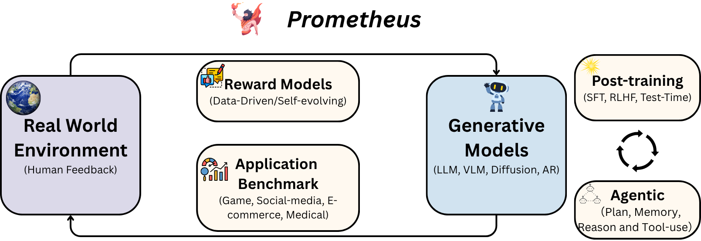

Jinfa Huang
黄锦发
✨Bonjour, I am a Ph.D. candidate in the Department of Computer Science, University of Rochester (UR), advised by Prof. Jiebo Luo.
Prior to that, I got my master's degree from Peking University (PKU), advised by Prof. Li Yuan and Prof. Jie Chen. I obtained the honored bachelor's degree from University of Electronic Science and Technology of China (UESTC).
My long-term goal is to build multimodal, interactive AI systems that ground, reason, and generate within a closed loop. I conceptualize this pursuit as the Prometheus framework:
(1) Distilling the Spark
Grounding autonomous intelligence in real-world environments via continuous human feedback.
(2) Self-Evolving
Aligning generative models with reward mechanisms to transition from passive recognition to understanding.
(3) Agentic Autonomy
Developing Agentic AI with planning, memory, and tool-use capabilities to autonomously learn and evolve.

Research Map: A schematic overview of my research vision.
News
- [2025/11]1 paper (QuoTA) accepted by AAAI 2026.
- [2025/10]I am excited to be selected as a volunteer at NeurIPS 2025! See you at San Diego 🏖️!
- [2025/09]1 survey paper (Next-Gen AIGC) accepted by Frontiers of Computer Science 2025.
- [2025/09]2 papers (OpenS2V-Nexus and VideoRAG) accepted by NeurIPS main and D&B track 2025.
- [2025/08] "Text-to-Video AI Blossoms" featured by The Academic Minute.
- [2025/08]1 paper (TACO) accepted by EMNLP Main 2025.
- [2025/07]1 paper (MoE-LLaVA) accepted by TMM 2025.
-
[2025/07]
Released LatentCoT-Horizon repo for Survey on Latent Reasoning.
- [2025/06]Research career has achieved 1000+ Google Citations! 🚀
- [2025/05]Workshop on MUCG will be presented at ACMMM 2025.
- [2025/05]MagicTime featured by University of Rochester News.
- [2025/04]Passed qualification exam, officially a Ph.D. Candidate! 🎉
- [2025/04]MagicTime accepted by TPAMI 2025.
- [2025/03]AR-Visual Survey accepted by TMLR 2025.
- [2025/02]ConsisID accepted by CVPR 2025 Highlight (Top 3%).
- [2025/01]2 papers (1 Poster, 1 Spotlight) accepted by ICLR 2025.
- [2025/01]Medical LLM Survey accepted by Nature Reviews Bioengineering 2025.
- [2025/01]Started research internship at Google, USA.
- [2024/12]PromptLLM accepted by TPAMI 2025.
- [2024/12]1 paper accepted by AAAI 2025.
- [2024/12]1 short paper accepted by COLING 2025.
- [2024/11]1 paper accepted by TIST 2024.
- [2024/11]1 paper accepted by npj Digital Medicine.
- [2024/11]1 survey accepted by CAAI Transactions on Intelligence Technology.
- [2024/10]Released Autoregressive Models in Vision Survey.
- [2024/09]1 paper (Spotlight) accepted by NeurIPS 2024 Datasets & Benchmarks Track.
- [2024/09]1 paper accepted by EMNLP 2024 Findings.
- [2024/06]Released ChronoMagic-Bench.
- [2024/05]Started research internship at ByteDance Seed, USA.
- [2024/05]1 paper accepted by ACL 2024 Findings.
- [2024/04]Released MagicTime.
- [2024/01]1 paper accepted by ICLR 2024.
- [2023/11]Released MedLLMsPracticalGuide.
- [2023/11]Released GPT-4V(ision) Analysis.
- [2023/09]Join the VIStA Lab as a Ph.D. student.
- [2023/07]1 paper accepted by ACMMM 2023.
- [2023/05]Awarded 2023 Peking University Excellent Graduation Thesis.
- [2023/04]1 paper accepted by TIP 2023.
- [2023/04]1 paper accepted by IJCAI 2023.
- [2023/02]1 paper (Top 10% Highlight) accepted by CVPR 2023.
- [2022/09]1 paper accepted by ICRA 2023.
- [2022/09]1 paper (Spotlight) accepted by NeurIPS 2022.

Education
University of Rochester (UR), USA
Ph.D. Student in Computer Science • Sep. 2023 - Present
Advisor: Prof. Jiebo Luo
Advisor: Prof. Jiebo Luo
Peking University (PKU), China
Master Degree in Computer Science • Sep. 2020 - Jun. 2023
Advisors: Prof. Li Yuan & Prof. Jie Chen
Advisors: Prof. Li Yuan & Prof. Jie Chen

University of Electronic Science and Technology of China (UESTC)
Bachelor Degree in Software Engineering • Sep. 2016 - Jun. 2020
Advisors: Xucheng Luo
Advisors: Xucheng Luo
Selected Research Experience
International Machine Learning, Amazon, USA
Applied Scientist Intern • Jul. 2025 - Sep. 2025
Advisors: Dr. Yang Liu, Dr. Chien-Chih Wang, Dr. Huidong Liu
Advisors: Dr. Yang Liu, Dr. Chien-Chih Wang, Dr. Huidong Liu
Core ML Applied ML, Google, USA
Student Researcher • Jan. 2025 - May. 2025
Advisors: Jiageng Zhang, Dr. Eric Li
Advisors: Jiageng Zhang, Dr. Eric Li
Seed Foundation Model, ByteDance, USA
Research Intern • May 2024 - Aug. 2024
Advisors: Dr. Quanzeng You, Dr. Yongfei Liu, Dr. Jianbo Yuan
Advisors: Dr. Quanzeng You, Dr. Yongfei Liu, Dr. Jianbo Yuan
Selected Publications
My current research mainly focuses on vision+language and generative models. (*Equal Contribution)

MagicTime: Time-lapse Video Generation Models as Metamorphic Simulators
TPAMI 2025 (IEEE Transactions on Pattern Analysis and Machine Intelligence)

We propose MagicTime, a metamorphic time-lapse video generation model, which learns real-world physics knowledge from time-lapse videos and implements metamorphic video generation.

Video-Text as Game Players: Hierarchical Banzhaf Interaction for Cross-Modal Representation Learning
CVPR 2023 (Highlight, Top 2.5%)

We propose Expectation-Maximization Contrastive Learning (EMCL) to learn compact video-and-language representations using Hierarchical Banzhaf Interaction.

Expectation-Maximization Contrastive Learning for Compact Video-and-Language Representations
NeurIPS 2022 (Spotlight, Top 5%)

Selected Surveys
I maintain several repositories to track the latest research.
-
[Arxiv 2025]
Personalized Video Generation: Progress, Applications, and Challenges
-
[Arxiv 2025]
A Survey on Latent Reasoning
-
[TMLR 2025]
Autoregressive Models in Vision Survey
-
[NNature Reviews Bioengineering 2025]
A Practical Guide for Medical Large Language Models


Selected Benchmarks
-
[Arxiv 2025]
OpenS2V-Nexus: A Detailed Benchmark for Subject-to-Video Generation
-
[NeurIPS 2024]
ChronoMagic-Bench: Metamorphic Evaluation of Text-to-Time-lapse Video
-
[TIST 2025]
GPT-4V(ision) as A Social Media Analysis Engine


Invited Talks
- "OpenS2V-Nexus: A Detailed Benchmark and Million-Scale Dataset for Subject-to-Video Generation“, University of Rochester, GIDS-10th Anniversary, 2025.09, [Poster]
- "MagicTime: Time-lapse Video Generation Models as Metamorphic Simulators", NYC Computer Vision Day, 2025.02, [Poster]
- "Can Video Generation Models as World Simulators?“, 3D视觉工坊, 2025.01, [Live]
- "Text-to-video AI blossoms with New Metamorphic Video Capabilities“, University of Rochester News, 2025.05, [News]
Academic Service
- Program Member: MUCG@ACMMM2025, ER@NeurIPS2025
- PC Member: CVPR'23-26, NeurIPS'22-25, ICLR'23-26, ICCV'23/25, ACM MM'24/25, ECCV'24, AAAI'25/26, COLM'25, ACL'25/26
- Journal Reviewer: IEEE TPAMI(x2), IJCV, IEEE TCSVT, NEJM AI
- Volunteer: NeurIPS 2025
Teaching
- TA, CSC 240/440 Data Mining, Prof. Monika Polak, UR, 2025 Fall
- TA, CSC 240/440 Data Mining, Prof. Thaddeus E. Pawlicki, UR, 2025 Spring
- TA, CSC 240/440 Data Mining, Prof. Monika Polak, UR, 2024 Fall
Personal Interests
- Anime: Love, sports, and sci-fi.
- Literature: Xiaobo Wang & Friedrich Nietzsche.
- Coding: Maintainer of PKU-Beamer-Theme and Build-Your-Own-X-with-Vibe-Coding.